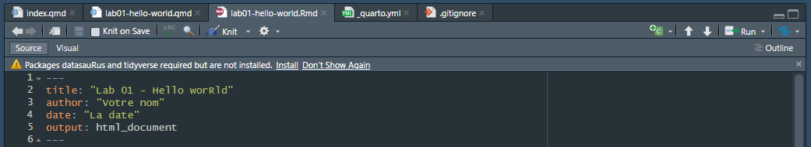
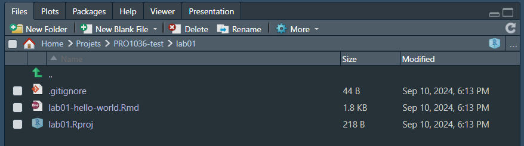
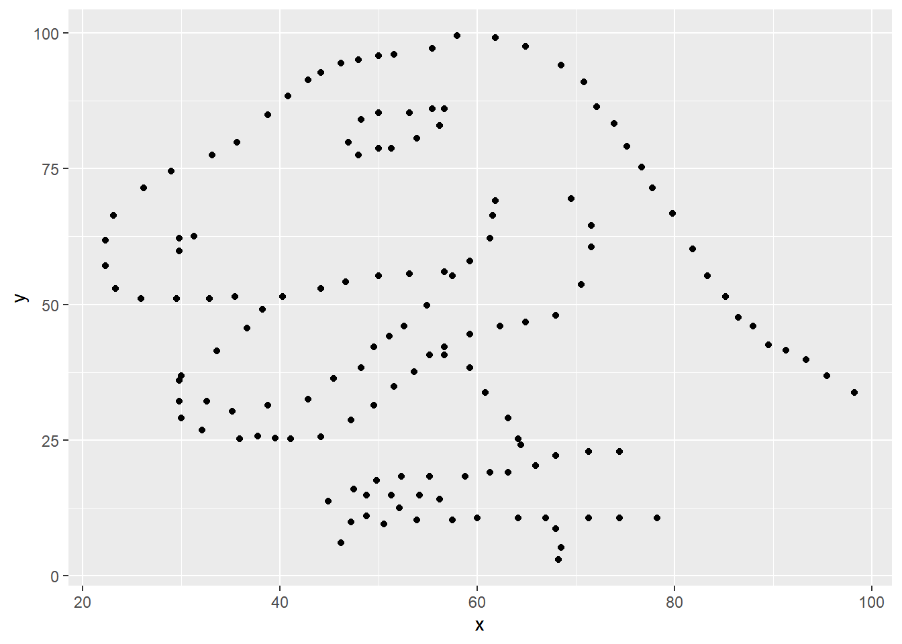

Lab 01 - Hello World
Getting started
Github
Nous allons commencer par récupérer le fichier Rmd dans lequel vous allez enregistrer vos réponses. Pour cela, deux possibilités, selon que git soit installé sur votre machine ou non
Git est correctement installé
Dans RStudio:
- Fichier > Nouveau Projet
- Version Control > Git
- Dans Repository URL : indiquez l’adresse: https://github.com/PRO1036/lab01.git
- Choisissez un nom pour le dossier qui sera créé, par exemple “Lab01”
- Choisissez où vous voulez créer le projet dans votre ordinateur.
Cela va copier les fichiers présents sur GitHub, et les copier dans le dossier spécifié. Vous pouvez passer à l’étape suivante
Git n’est pas installé
Dans Rstudio:
- Fichier > Nouveau Projet
- New Directory > New Project
- Choisissez un nom pour le dossier qui sera créé, par exemple “Lab01”
- Choisissez où vous voulez créer le projet dans votre ordinateur.
Nous avons créer un projet vide. Il faut maintenant aller chercher les fichiers su GitHub. Sur GitHub:
- Visitez l’adresse: https://github.com/PRO1036/lab01
- Cliquez sur le bouton vert:
- Cliquez ensuite sur Download ZIP
- Ouvrez le fichier ZIP et copiez le contenu du dossier ZIP (fichier .Rmd) dans le dossier de votre projet R
⚠️ Dans le fichier zip, vous devriez avoir un dossier (nommé lab01-master). Ne copiez pas ce dossier dans votre projet RStudio mais plutôt son contenu.
Dans les deux cas
Dans RStudio, vous devriez voir le fichier .Rmd listé en bas à droite dans la liste de fichier:

Si vous cliquez maintenant sur le fichier .rmd, il va apparaitre dans la zone en haut à gauche. Vous pourrez l’éditer et le “Render/Knit” pour voir le résultat final.
Veuillez noter que ce que vous écriver dans le fichier Rmd et ce que vous écrivez dans la console ne communiquent pas (il s’agit de deux environnements différents). Si vous voulez utiliser la console (zone en bas à gauche), il faut retaper les commandes.
Installation des packages
Nous allons travailler avec deux packages: datasauRus qui contient le jeu de données que nous allons utiliser et tidyverse qui est une collection de packages pour l’analyse de données (nous allons beaucoup en parler). Normalement, RStudio devrait vous proposer de les installer automatiquement, comme montré sur l’image ci-dessous:
Pour charger les packages dans l’espace de travail, nous devons l’indiquer:
library(tidyverse)
library(datasauRus)Ces deux lignes se retrouvent également dans votre fichier Rmarkdown. Si vous voulez utiliser la console, il faudra également les taper.
Données
Nous allons travailler avec le jeu de données appelé datasaurus_dozen, faisant partie du package datasaurus. Ce jeu de données contient en réalité 131 jeux de données, dont le but est de nous montrer l’importance de la visualisation de données, et pourquoi elle doit accompagner les statistiques descriptives.
Pour en savoir plus sur le jeu de données, vous pouvez taper ?datasaurus dans la console. En ajoutant un ? devant le nom d’un objet vous affichera l’aide associée à cet objet.
Exercises
Exercice 1
En utilisant l’aide, combien de lignes et de colonnes possède le datasaurus_dozen ? Quelles sont les variables présentes dans le tableau ? Vous pouvez ajouter vos réponse dans votre fichier .Rmd.
La colonne dataset permet d’indiquer le jeu de données. Nous pouvons compter le nombre d’éléments pour chaque jeu de données:
datasaurus_dozen %>%
count(dataset)# A tibble: 13 × 2
dataset n
<chr> <int>
1 away 142
2 bullseye 142
3 circle 142
4 dino 142
5 dots 142
6 h_lines 142
7 high_lines 142
8 slant_down 142
9 slant_up 142
10 star 142
11 v_lines 142
12 wide_lines 142
13 x_shape 142Le dataset Datasaurus original (dino) a été créé par Aberto Cairo. Les autres datasets ont été générés par Matejka et Fitzmaurice Matejka and Fitzmaurice (2017). Dans cet article, ils présentent des données très différentes qui ont les mêmes descriptions statistiques.
🧶 ✅ ⬆️ Knit, commit, and push ! Envoyez vos résutlats sur Github en indiquant un message du type “Ajout des réponses à l’exercice 1”.
Exercice 2
Représentez y en fonction de x pour le dino dataset. Calculez ensuite le coefficient de correlation. Vous ne comprenez pas tout ? Pas grave !
Ci-dessous se trouve le code dont vous aurez besoin pour compléter l’exercice. Prenez seulement ce dont vous avez besoin, knittez et observez le résultat !
Nous allons commencer par prendre le datasaurus_dozen et le piper dans la fonction filter pour filtrer selon dataset == "dino". Le résutlat est stocké dans un nouveau tableau appelé dino_data.
dino_data <- datasaurus_dozen %>%
filter(dataset == "dino")Décomposons un peu tout cela !
Pour commencer, l’opérateur pipe: %>%, prend ce qui vient avant (à gauche) et l’envoie comme premier argument de ce qui vient après (à droite ou en dessous). Concrètement, nous pouvons lire filter le datasaurus_dozen pour ne garder seulement les lignes où dataset == "dino".
Ensuite, l’opérateur d’assignation <- permet de définir le nom dino_data et d’y stocker le résultat de l’opération de filtration.
Nous devons ensuite visualiser les données. Pour cela nous allons utiliser la fonction ggplot. Le première chose à indiquer sont les données à visualiser. Ensuite nous allons définir un l’aesthétisme du graphique. Par exemple, nous allons envoyer la variable x du tableau sur l’axe x du graphe, et la variable y du tableau sur l’axe x. Nous allons ensuite définir la geométrie du graphe. Dans ce cas, nous voulons que chaque point soit représenté par un point, d’où le geom_point.
ggplot(data = dino_data, mapping = aes(x = x, y = y)) +
geom_point()
Ne vous inquiétez pas si cela parait encore compliqué, nous verrons tout cela plus en détail plus tard.
Pour la deuxième partie de l’exercice, nous voulons calculer quelques statistiques sur notre jeu de données. Le coéfficient de corrélation, souvent appelé \(r\) en statistique, mesure la relation linéaire entre deux variables. Vous verrez que certaines paires de variables n’ont pas de relation linéaire. C’est pour cela qu’il est important de les visualiser. Il n’est pas toujours nécessaire de calculer le \(r\) dans ces cas là. Dans notre cas, la relation n’est clairement pas linéaire, mais plutôt dinosaire.
Faisons le quand même pour le plaisir !
But, for illustrative purposes, let’s calculate the correlation coefficient between x and y.
dino_data %>%
summarize(r = cor(x, y))# A tibble: 1 × 1
r
<dbl>
1 -0.0645🧶 ✅ ⬆️ Knit, commit, and push ! Vous pouvez mettre un message indiquant que vous avez ajouté les réponses à l’exercice 2.
Exercice 3
Représentez y en fonction de x pour le star dataset. Pour cela, réutilisez le code de l’exercice précédent ! Calculez également le coefficient de corrélation. Comparez avec celle obtenu pour le dino dataset.
🧶 ✅ ⬆️ Knit, commit, and push !
Exercice 4
Représentez y en fonction de x pour le circle dataset. Pour cela, réutilisez le code de l’exercice précédent ! Calculez également le coefficient de corrélation. Comparez avec celle obtenu pour les dino et star dataset.
🧶 ✅ ⬆️ Knit, commit, and push !
Exercice 5
Nous allons maintenant représenter tous les jeux de données d’un coup ! Pour cela, nous allons utilisé quelque chose appelé le faceting
ggplot(datasaurus_dozen, aes(x = x, y = y, color = dataset))+
geom_point()+
facet_wrap(~ dataset, ncol = 3) +
theme(legend.position = "none")Nous pouvons également utiliser la fonction group_bypour calculer des statistiques directement sur chaque jeu de données.
datasaurus_dozen %>%
group_by(dataset) %>%
summarize(r = cor(x, y)) %>%
print(13)Nous en avons fini avec notre première analyse de données !
🧶 ✅ ⬆️ Bien joué! knit, commit and push ! Vous pouvez dire que vous avez terminer le lab 01 dans votre message ! Vous pouvez allez voir sur Github si tout est en ordre.
References
Matejka, J. and Fitzmaurice, G. (2017, May). Same Stats, Different Graphs: Generating Datasets with Varied Appearance and Identical Statistics through Simulated Annealing. Denver Colorado USA (p. 1290–1294). https://doi.org/10.1145/3025453.3025912
Footnotes
Si vous vous demandez pourquoi il y a 13 jeux de données dans cette “douzaine de datasaurus”: Baker’s dozen↩︎